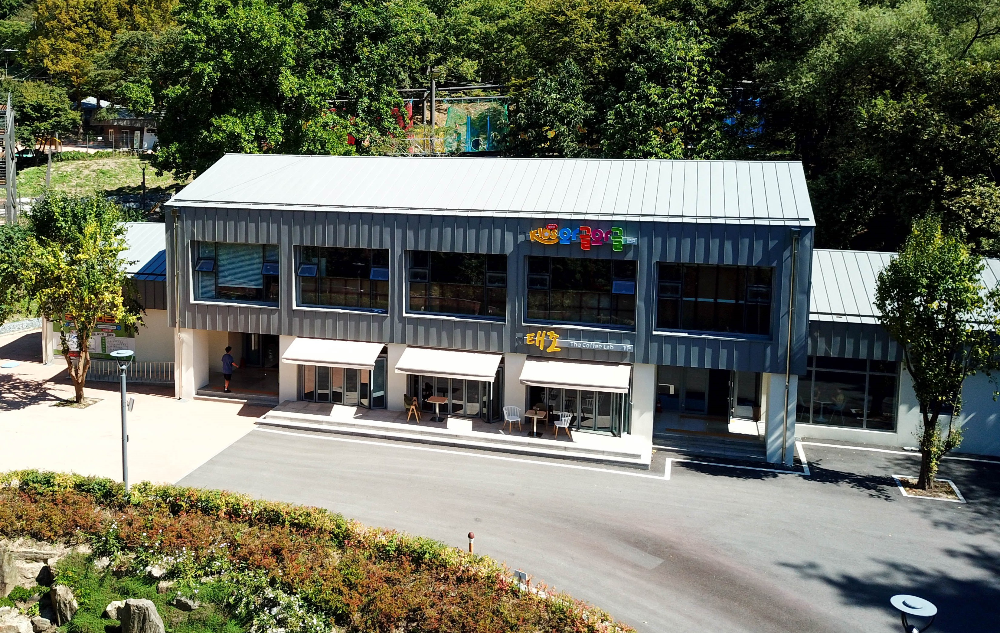

어울림센터
무장애나눔길 도착지점에 위치한 태조산공원의 복합 편의공간입니다.

산림레포츠 이용 전후 휴식과 편의시설을 이용할 수 있으며, 산림레포츠 매표가 가능합니다.
시설 안내
층별 주요 시설을 확인할 수 있습니다.
1층
카페 · 남녀화장실 · 장애인화장실 · 산림레포츠 매표
2층
키즈카페 · 남녀화장실 · 기저귀갈이대 · 영유아·보호자 편의시설
주요 이용 정보
어울림센터에서 이용할 수 있는 주요 기능입니다.
🎟️ 산림레포츠 매표
산림레포츠 이용을 위한 매표가 가능합니다. 출발지 교육장에서도 매표할 수 있습니다.
☕ 휴식·편의
카페와 화장실 등 공원 이용 중 편하게 이용할 수 있는 편의시설이 마련되어 있습니다.
👶 가족 편의시설
2층에 키즈카페와 기저귀갈이대, 영유아와 보호자를 위한 편의공간이 마련되어 있습니다.
♿ 장애인 편의
1층 화장실에는 장애인화장실이 함께 마련되어 있습니다.
위치 안내
어울림센터의 위치를 확인하세요.
📍 무장애나눔길 도착지점
어울림센터는 무장애나눔길 도착지점에 위치하고 있습니다. 산림레포츠 시설을 이용하기 전 매표 및 휴식을 위한 공간으로 이용할 수 있습니다.
관련 시설 안내
자세한 이용정보는 관련 안내에서 확인할 수 있습니다.